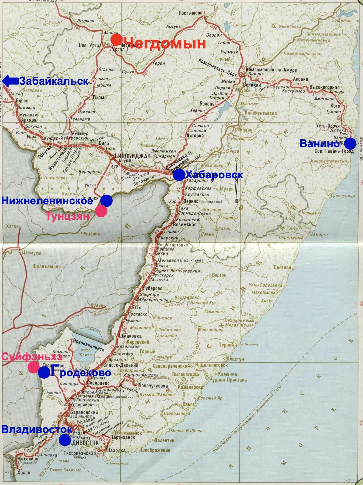

General information
Sawmill JSC «Sceamen» is a competitive manufacturer of high-quality sawn timber on the Russian and
international markets. The sawmill is located in Khabarovsk region.
The sawmill produces:
- edged boards;
- cants, bars;
- other products (at the Client's request).
The sawmill produces high-quality sawn timber in accordance with GOST 26002-83, GOST 8486-88. Sawn timber is made of various sizes, 4.00 meters
long (or 6.00 meters), natural moisture, from larch and spruce/fir (also birch and aspen).


Production capacity of the sawmill JSC «Sceamen»:
- 36 000 м3/year of sawn timber;
- 60 000 м3/year of incoming round wood.
The production complex of the sawmill in figures:
- land plot - 1.85 hectares;
- possible additional land plot - 4.00 ha;
- industrial building - 1.000 m2;
- max permitted electrical power - 280 kW;
- possible additional electrical power - 1.7 MW.
Equipment: installed at the sawmill equipment is manufactured by the Japanese company «Oi Seisakusho Co., LTD».
Transport connection: the sawmill can be conveniently accessed by truck and railroad transport. Station Chegdomyn (station code 91720) is located near the main passage of the Baikal-Amur Mainline.
Wood procurement: carried out year-round by truck and railroad transport from wood sites/storages up to 200 km.
Shipment of sawn timber: carried out by truck and railroad transport.
back
Advantages
The regional center: sawmill JSC «Sceamen» is an equipped strategic territory for timber processing, located in
the central locality Verkhnebureinsky district of Khabarovsk region with a developed infrastructure, sufficient reserves for energy supply
and convenient access to the railroad.

Railroad end is located near the sawmill's territory
Equipment: the installed Japanese industrial band saw equipment «Oi Seisakusho Co., LTD» allows solving the problem of high-quality
sawing of round timber with a large number of options for its subsequent refinement at the sawmill territory. High
automation, preferable processing of medium and large log diameters, the ability to saw logs up to 6.00 m long. Band saw
mill technology lines are traditionally used in Japanese woodworking factories, far away from sources of raw wood
materials, since they provide a higher percentage of useful sawn timber yield. The average useful yield of finished
products, depending on the specification, reaches 58-62%.
Reliable Japanese equipment («Oi Seisakusho Co., LTD»)
Industrial site: the technological line, the workshop, the interior layout of the workshop, complexly shaped cast foundations for the
equipment were designed by the specialists of the Japanese company "Oi Seisakusho Co., LTD" for the Chegdomyn territory.
They also supervised the equipment installation. The sawmill territory is landscaped with over 4000 m3 of ash and gravel mixture with subsequent leveling and compaction.
Round wood at the Wood Yard
Strategic development prospects: the general project of the sawmill provides for the construction of drying chambers and a workshop for carpentry and
glue. At the mill, it is possible to install additional equipment both inside the production building and outside it. It
is planned to produce fuel pelletes and fuel briquettes made of wood waste.
back
Location
Sawmill's location:
Khabarovsk region, Verkhnebureinsky district, Chegdomyn, Magistralnaya st., 28 (Yandex / Google Maps).
Far Eastern Railway
Delivery distances of the finished goods by railroad:
- st. Chegdomyn - st. Grodekovo 1 415 km;
- st. Chegdomyn - st. Vladivostok 1 430 km;
- st. Chegdomyn - st. Leninsk 612 km;
- st. Chegdomyn - st. Vanino 971 km;
- st. Chegdomyn - st. Zabaykalsk 2 504 km.
back
Contacts
Joint-stock company «Sceamen»
Manufacturer's address:
Khabarovsk region, Verkhnebureinsky district, Chegdomyn, Magistralnaya st., 28
Email:
sceamen.info@gmail.com
Telephone:
+7 985 929 22 44
WeChat / WhatsApp / Viber / Telegram:
+7 985 929 22 44
back